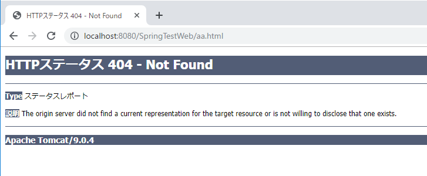
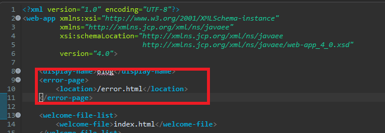
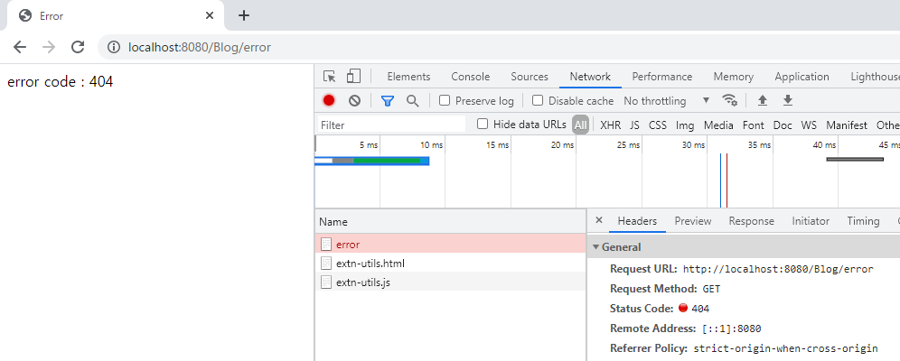
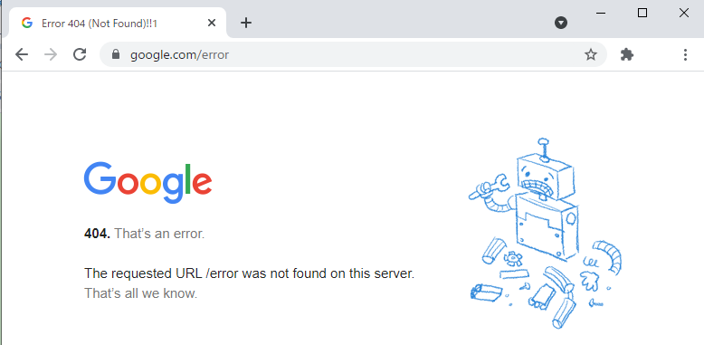
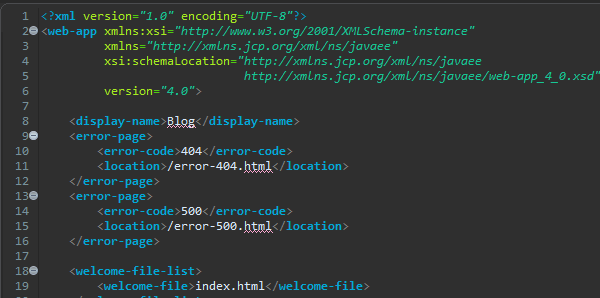
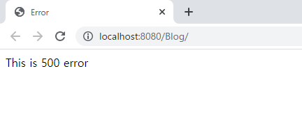
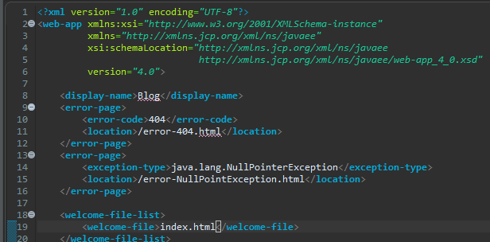
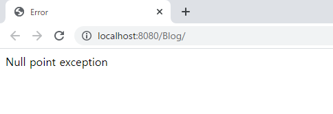

[Java] 53. ウェブサービス(Web service)でエラーページを処理する方法
こんにちは。明月です。
この投稿はウェブサービス(Web service)でエラーページを処理する方法に関する説明です。
基本的なウェブプロジェクトを設定することは以前の投稿まで説明することで終わりました。
ウェブサービスのフレームワークのSpring framworkを設定することからデータベースのORM(Object reference mapping)のJPA設定間です。つまり、実際にクライアント(ブラウザ)がサーバに接続して当該なデータをデータベースから取得してクライアント(ブラウザ)に表示するHTMLをパーシングする作業までです。
ここまで設定してプロジェクトを作成してウェブプログラムを運用することで問題はありません。
しかし少しディテールな作業があります。例えば、エラーが発生した時、エラーページを表示する作業やログイン管理のため、セッション作業などのプログラムの完成度を上げるような作業です。
基本的にトムキャットサービスでエラーが発生すると下記とおりのページが表示されます。

実際に運用するウェブサービスで上みたいなページが表示されるとダメです。何かが完成されてないみたいな画面です。
それでエラーが発生した時、我々が指定したページを表示するような方法があります。
ウェブ設定(web.xml)でエラーフォーワードを設定することができます。
<error-page>
<location>/error.html</location>
</error-page>

上の設定はerrorが発生した場合にerror.htmlに遷移することです。
私は拡張子が.htmlの場合、Spring frameworkのControllerをとおりようにしましたのでControllerクラスにerror.htmlを設定します。
package controller;
import javax.servlet.http.HttpServletRequest;
import javax.servlet.http.HttpServletResponse;
import javax.servlet.http.HttpSession;
import org.springframework.stereotype.Controller;
import org.springframework.ui.ModelMap;
import org.springframework.web.bind.annotation.RequestMapping;
@Controller
public class Home {
// 要請urlパターン(index.html)
@RequestMapping(value = "/index.html")
public String index(ModelMap modelmap, HttpSession session, HttpServletRequest req, HttpServletResponse res) {
modelmap.addAttribute("Data", "Hello world");
// viewのファイル名
return "index";
}
// 要請urlパターン(error.html)
@RequestMapping(value = "/error.html")
public String error(ModelMap modelmap, HttpSession session, HttpServletRequest req, HttpServletResponse res) {
// modelmapにerror codeを設定
modelmap.addAttribute("Data", "error code : " + res.getStatus());
// viewのファイル名
return "error";
}
}
<%@ page language="java" contentType="text/html; charset=UTF-8" pageEncoding="UTF-8"%>
<!DOCTYPE html>
<html>
<head>
<meta charset="UTF-8">
<title>Error</title>
</head>
<body>
<!-- modelmapから貰うデータ -->
${Data}
</body>
</html>
error.htmlに要請するパターンを設定してerror.jspとパーシングしてブラウザに応答します。

確実にerror.htmlが要請されエラーコードが404(ページ無し)が表示されます。
ブラウザデバッグモードでnetworkタブの要請応答の状況を確認すればerror要請すれば404エラーが発生しますが、redirectで発生したこと(再送信)ではなく、errorページに関数エラーページが発生しました。
実際のサービスでエラーが発生するか間違いアドレスに接続すると、基本トムキャットページではなく、エラーページが表示することを見たことがあります。

上のイメージはグーグルで間違いアドレスに接続した場合に表示される画面です。
ウェブのエラーコード別に各別のページを設定することもできます。
<error-page>
<error-code>404</error-code>
<location>/error-404.html</location>
</error-page>
<error-page>
<error-code>500</error-code>
<location>/error-500.html</location>
</error-page>

package controller;
import javax.servlet.http.HttpServletRequest;
import javax.servlet.http.HttpServletResponse;
import javax.servlet.http.HttpSession;
import org.springframework.stereotype.Controller;
import org.springframework.ui.ModelMap;
import org.springframework.web.bind.annotation.RequestMapping;
@Controller
public class Home {
// 要請urlパターン(index.html)
@RequestMapping(value = "/index.html")
public String index(ModelMap modelmap, HttpSession session, HttpServletRequest req, HttpServletResponse res) {
// 強制エラー発生(500エラーコード)
throw new RuntimeException();
}
// 要請urlパターン(error.html)
@RequestMapping(value = "/error-404.html")
public String error(ModelMap modelmap, HttpSession session, HttpServletRequest req, HttpServletResponse res) {
// modelmapにerror code設定
modelmap.addAttribute("Data", "error code : 404 ");
// viewのファイル名
return "error";
}
// 要請urlパターン(error-500.html)
@RequestMapping(value = "/error-500.html")
public String error500(ModelMap modelmap, HttpSession session, HttpServletRequest req, HttpServletResponse res) {
// modelmapにデータ設定
modelmap.addAttribute("Data", "This is 500 error");
// viewのファイル名
return "error";
}
}

上の例はindex.htmlページを要請したらExceptionが発生して500エラーコードが発生します。
そうならerror500関数を呼び出してerror.jspページの"This is 500 error"の値を表示します。
エラーコードではなく、もっと細かくExceptionの種類の別で処理ページを分けることができます。
<error-page>
<error-code>404</error-code>
<location>/error-404.html</location>
</error-page>
<error-page>
<exception-type>java.lang.NullPointerException</exception-type>
<location>/error-NullPointException.html</location>
</error-page>

package controller;
import javax.servlet.http.HttpServletRequest;
import javax.servlet.http.HttpServletResponse;
import javax.servlet.http.HttpSession;
import org.springframework.stereotype.Controller;
import org.springframework.ui.ModelMap;
import org.springframework.web.bind.annotation.RequestMapping;
@Controller
public class Home {
// 要請urlパターン(index.html)
@RequestMapping(value = "/index.html")
public String index(ModelMap modelmap, HttpSession session, HttpServletRequest req, HttpServletResponse res) {
// 強制エラー発生
throw new NullPointerException();
}
// 要請urlパターン(error.html)
@RequestMapping(value = "/error-404.html")
public String error(ModelMap modelmap, HttpSession session, HttpServletRequest req, HttpServletResponse res) {
// modelmapにerror code設定
modelmap.addAttribute("Data", "error code : 404 ");
// viewのファイル名
return "error";
}
// 要請urlパターン(error-NullPointException.html)
@RequestMapping(value = "/error-NullPointException.html")
public String errorNullPointException(ModelMap modelmap, HttpSession session, HttpServletRequest req, HttpServletResponse res) {
// modelmapにデータ設定
modelmap.addAttribute("Data", "Null point exception");
// viewのファイル名
return "error";
}
}
今回はindex.htmlでNullPointerExceptionエラーを発生しました。

最近の小さいサイトをみればエラー処理を設定しなくて、ウェブサーバ(WAS)で設定されている基本エラーページが見える場合があります。
単純なエラーページなら別に問題ないですが、どのケースにはソース内部のデバッグやcall stack情報がみえる時もあります。ソース内部の情報が見えたらセキュリティ(Security)としてすごく悪いので、このエラー処理はする方が良いです。
ここまでウェブサービス(Web service)でエラーページを処理する方法に関する説明でした。
ご不明なところや間違いところがあればコメントしてください。
- [Java] 56. Web serviceのサーブレット(Servlet)で初期化作業(properties設定)2021/07/02 17:10:36
- [Java] 55. Spring frameworkに文字化けを解決する方法(Encoding設定)2021/06/30 16:37:16
- [Java] 54. Spring frameworkでWeb filterを使う方法2021/06/29 18:25:12
- [Java] 53. ウェブサービス(Web service)でエラーページを処理する方法2021/06/25 13:35:54
- [Java] 52. SpringフレームワークでDAOをFactory method Patternを利用して依存性注入する方法2019/10/17 07:15:48
- [Java] 51. SpringフレームワークでJPAを使い方(依存性注入@Autowired)2019/10/16 07:32:55
- [Java] 50. JPAプロジェクトでDAOクラスを作成する方法2019/10/15 20:12:35
- [Java] 49. JPAでトランザクション(transaction)を扱う方法と共通関数作成する方法(Observerパターン)2019/10/14 20:13:44
- [Java] 48. JPAでQueryを使う方法(JPQLクエリを作成する方法)2019/10/13 22:55:52
- [Java] 47. JPAのEntityクラスのリファレンス設定(cascade, fetch)2019/10/13 00:40:08
- [Java] 46. JPAのEntityクラスの基本設定(@GeneratedValue、 @ManyToMany)2019/10/11 07:30:14
- [C#] 46. データベース(MSSQL)に接続する方法2021/10/07 18:39:58
- [C#] 45. ネットワークソケット通信(Socket)を使い方2021/10/06 19:06:25
- [C#] 44. ファイル(FileInfo)とディレクトリ(DirectoryInfo)を扱い2021/10/05 19:29:34
- [C#] 43. ストリーム(Stream)とバイナリ(byte[])、エンコード(Encoding)、そしてusingを使い方とIDisposableインターフェース2021/10/04 18:33:04
- [C#] 42. ファイルを扱い(IO)とファイルメタデータ(FileInfo)を使い方2021/10/01 20:10:21
- [C#] 41. Taskクラスとasync、awaitを使い方2021/10/01 18:59:14
- [Javascript ] WebのFull calendar(スケジュールカレンダー)の使い方法2021/07/15 21:35:36
- [Java] 56. Web serviceのサーブレット(Servlet)で初期化作業(properties設定)2021/07/02 17:10:36
- [Java] 55. Spring frameworkに文字化けを解決する方法(Encoding設定)2021/06/30 16:37:16
- [Java] 54. Spring frameworkでWeb filterを使う方法2021/06/29 18:25:12
- [Java] 53. ウェブサービス(Web service)でエラーページを処理する方法2021/06/25 13:35:54
- [Design pattern] 1-3. ファクトリメソッドパターン(Factory method pattern)2021/06/23 19:45:37
- [Java] WebSocketでチャット履歴をローディングする方法2021/06/15 18:34:45
- [Java] WebSocketを利用してユーザ(サイト運用者)が他のユーザとチャットする方法2021/06/15 17:20:08
- [Design pattern] 1-2. ビルダーパターン(Builder pattern)2021/06/11 19:06:28